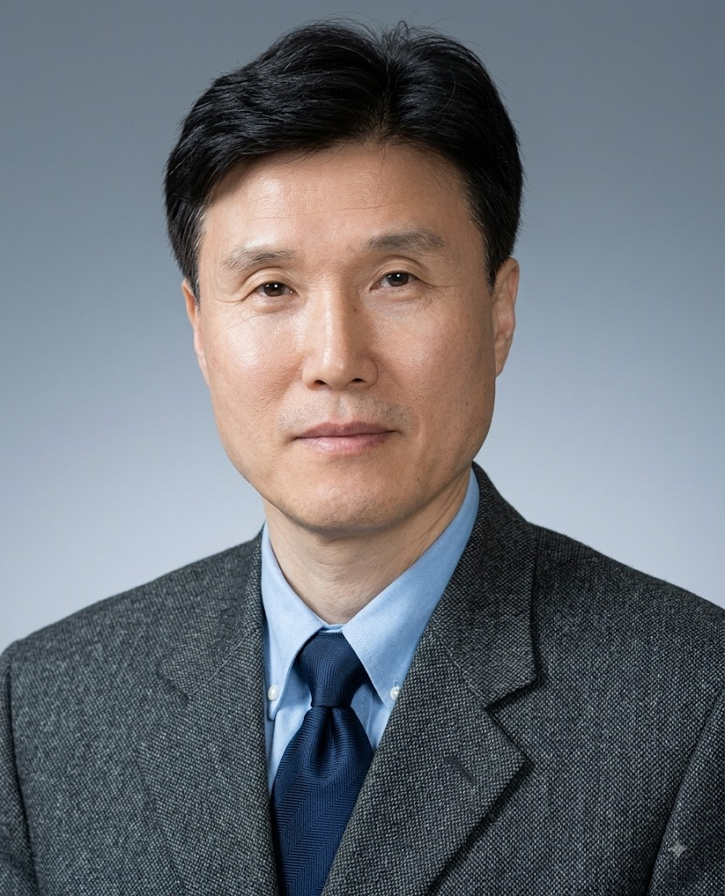

2026 행복나눔축제
웃음으로 사람을 위로해 온 개그우먼, 이성미 집사님의 진솔한 이야기를 함께 나누는 시간입니다.
- 일시
- 2026년 12월 6일(주일) 오전 11시
- 장소
- 새암교회 예배당 (고기로 165)
- 강사
- 특별강사 개그우먼 이성미 집사 간증
“하나님은 영이시니 예배하는 자가 영과 진리로 예배할지니라” (요한복음 4:24)
주일
교회학교 같은 시간
매일
금요일
유치부 · 초등부 · 중고등부 예배는 주일 오전 11시에 함께 드립니다. 자세히 보기 →

교회 소개 더 보기새암교회는 대한예수교 장로회 합동 교단에 소속되어 있으며, 영감있는 대그룹 예배와 그리스도의 사랑과 생명을 삶의 실천으로 전하는 소그룹 셀가족 모임의 두날개로 날아오르는 건강한 교회입니다.
새암교회는 하나님과 나를 이어주고 세상과 교회를 이어주며, 건강한 가정을 세워가는 축복의 고리가 되는 교회입니다.
새암교회는 새암평생제자프로세스 훈련을 통해 살아있는 말씀의 능력과, 성령의 임재를 체험하며 삶이 행복하게 변화되는 황홀한 평신도 사역자를 배출하는 살아있는 교회입니다.
지역과 나라와 세계를 향해 교회를 세우고, 다음 세대의 리더를 길러 냅니다.
영감 있는 대그룹 예배와 소그룹 셀가족 모임(행복모임), 두 날개로 날아오르는 건강한 교회입니다.
모든 성도가 행복모임 리더가 되어 자신의 12명의 제자를 세우는 비전입니다.
예수님 만나기 · 경험하기 · 닮기 · 전하기 — 평생 밥을 먹듯 이어 가는 제자의 길입니다.
주일 설교는 유튜브로, 매일의 묵상과 기도는 베리트 365로 이어집니다. “언제 어디서든 기도하라. 베리트365와 함께 하세요.”